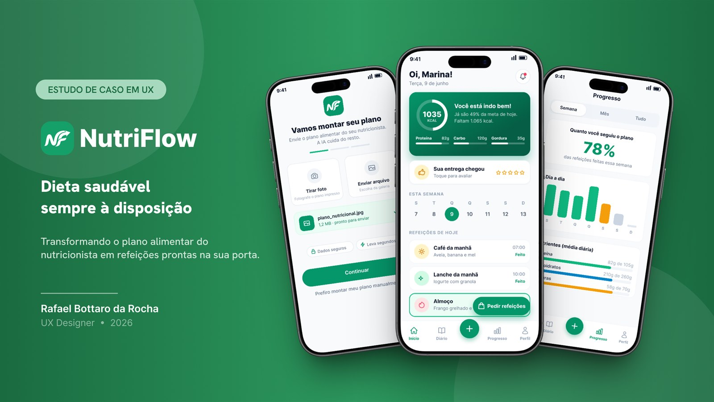

NutriFlow, dieta saudável sempre à disposição
- Problema
- Quem recebe um plano alimentar do nutricionista trava na execução: as refeições são personalizadas e artesanais, e no corre do dia a dia ninguém consegue preparar nem pedir.
- Solução
- Um app em que a IA lê o plano enviado por foto ou PDF, monta o calendário de refeições e entrega tudo pronto em casa. O pedido cabe em três passos: período, entrega e pagamento.
83respostas na pesquisa quantitativa
5entrevistas em profundidade
100%sucesso na tarefa de pedido no teste